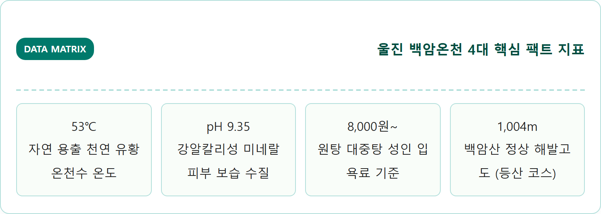
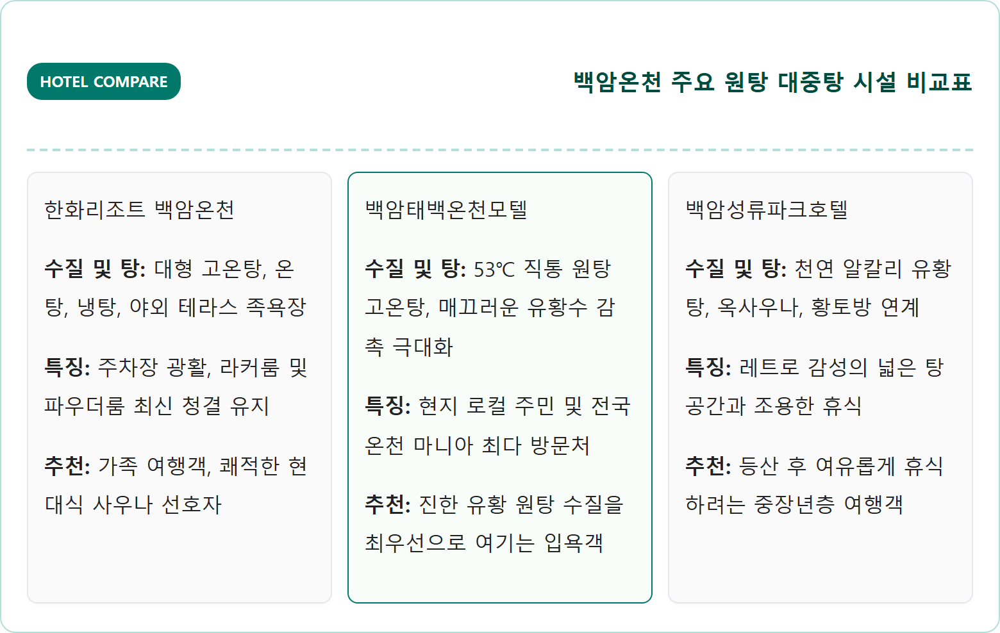
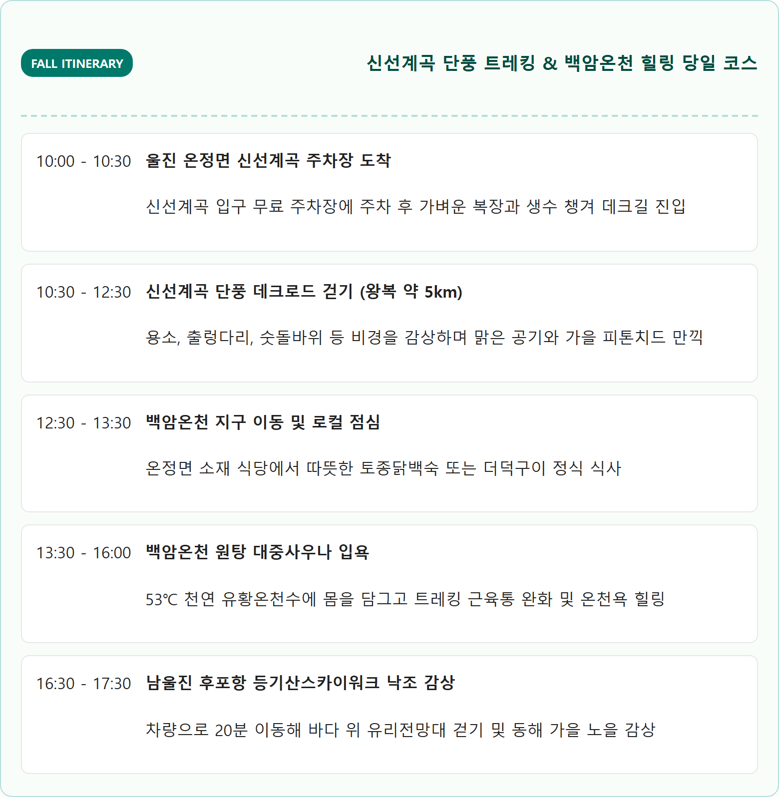
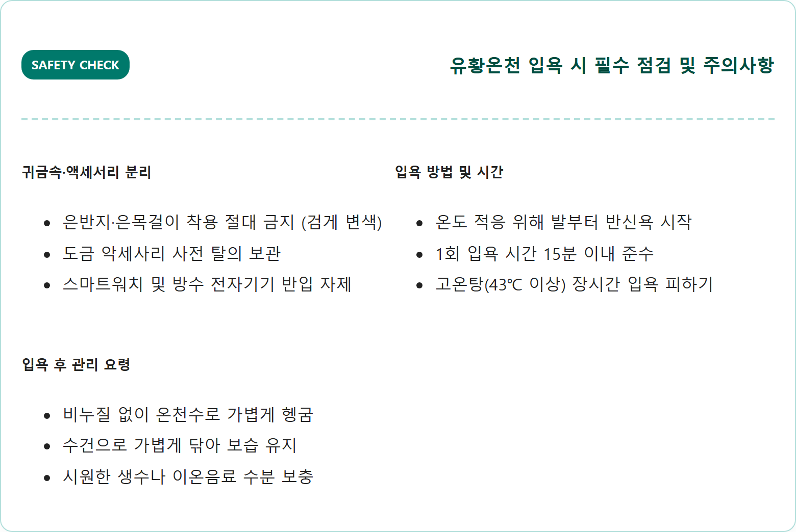
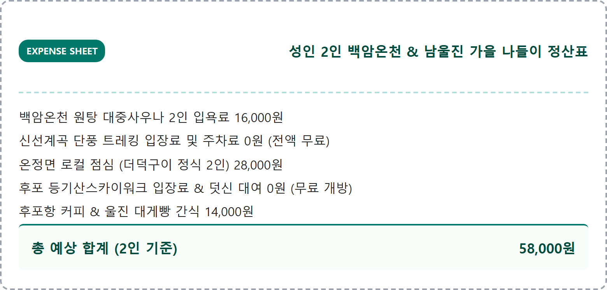

신라 시대 사냥꾼에게 쫓기던 사슴이 스스로 상처를 치유했다는 전설을 간직한 경북 울진 백암온천은 수온 53℃에 달하는 국내 최상급 천연 알칼리성 유황온천입니다.
백암산(1,004m) 동쪽 기슭에서 뿜어져 나오는 유황 온천수는 은은한 유황 특유의 미네랄 성분과 매끄러운 수질로 만성 신경통, 관절염, 피부 노폐물 배출에 독보적인 효능을 자랑합니다. 가을철 기암괴석과 붉은 단풍이 비경을 이루는 신선계곡 데크길을 걷고, 88번 지방도 드라이브를 즐긴 뒤 뜨거운 유황 원탕에 몸을 담그는 여정은 심신의 피로를 말끔히 씻어내는 최고의 가을 보약 코스입니다.
📷 AI 대표 메인 썸네일 생성 영역images/261025/2_travel_uljin_baegam_hot_spring_sulfur_drive_1.png
A cinematic, ultra-realistic eye-level landscape photograph capturing the historic Baegam Hot Springs district surrounded by the vibrant autumn slopes of Baegamsan Mountain in Uljin, South Korea. Warm steam rising gently from a traditional stone hot spring fountain in the town square. In the foreground, rich golden ginkgo and deep crimson maple trees framing the tranquil scene. In the background, forested mountain ridges under a crisp autumn afternoon sky. Soft warm sunlight casting long shadows, authentic Korean hot spring village ambiance, highly detailed textures of wet granite stone and autumn leaves, 8k resolution, 1:1 aspect ratio.
경북 울진 백암산 자락 백암온천 마을의 가을 단풍 풍경과 따뜻한 온천 김 / AI 제작 이미지
01 | 천년 유황온천 백암온천 — 신라시대부터 이어진 53℃ 천연 온천수 매력
경북 울진군 온정면에 위치한 백암온천은 삼국유사와 고려사, 조선왕조실록 등 유구한 역사 문헌에 빠짐없이 기록되어 있는 유서 깊은 천년 명탕입니다.
신라 시대 한 사냥꾼의 화살을 맞고 도망치던 사슴이 백암산 골짜기에서 솟아나는 물에 상처를 씻고 완쾌되어 달아났다는 설화에서 유래하였으며, 이후 인근 백암사 스님들이 돌로 탕을 만들어 환자들을 치료하면서 전국적인 명성을 얻게 되었습니다.
백암온천의 가장 큰 특징은 지하 약 400m의 화강암 단층선에서 솟구치는 53℃의 고온 천연 온천수라는 점입니다. 가열하지 않고도 공급되는 뜨거운 천연 온천수에는 황화수소이온과 나트륨, 칼륨, 칼슘, 라돈 등 다채로운 미네랄이 이온 상태로 녹아 있어 입욕 즉시 피부 표면이 비단결처럼 부드러워지는 감촉을 느낄 수 있습니다.
특히 만성 관절염, 류머티즘, 신경통으로 고생하시는 어르신들의 통증 완화와 환절기 아토피·건선 등 피부 질환 개선에 오랜 세월 탁월한 치유력을 인정받아 효도 온천 여행지로 확고한 사랑을 받고 있습니다.

울진 백암온천 핵심 수치 매트릭스 / 인포그래픽 카드
02 | 백암온천지구 주요 온천호텔 원탕 비교 — 한화리조트 백암온천 vs 백암태백온천모텔 vs 성류파크
백암온천 관광특구 내에는 독자적인 자체 온천 관정을 보유하고 원탕수를 직공급하는 여러 온천 숙소와 사우나 시설들이 밀집해 있어 여행 스타일에 맞게 선택할 수 있습니다.
가장 규모가 크고 쾌적한 부대시설을 자랑하는 곳은 '한화리조트 백암온천'입니다. 넓은 대형 온천사우나와 온천 족욕체험장, 편의시설이 잘 갖추어져 있어 가족 단위 방문객에게 최적화되어 있습니다.
반면, 온천 마니아들 사이에서 '진짜 찐 원탕 수질'로 손꼽히는 곳은 '백암태백온천모텔'과 '백암성류파크관광호텔'입니다. 화려한 최신 인테리어는 아니지만, 옛 대중목욕탕의 정겨운 분위기 속에서 파이프를 통해 갓 용출된 진한 유황 원탕수를 오롯이 체감할 수 있어 어르신들의 충성도가 매우 높습니다.
가성비와 깔끔함을 중시하는 여행객에게는 리모델링을 마친 백암스프링스호텔과 백암고려온천호텔 대중탕도 좋은 선택지입니다.

백암온천지구 주요 온천 숙소 비교 / 인포그래픽 카드
03 | 2026 백암온천 대중탕 입욕 요금과 운영 시간표 — 당일 목욕 꿀팁
백암온천 지구의 대중탕들은 이른 아침 일찍부터 문을 열어 등산객과 주민들을 맞이합니다.
대부분의 온천 사우나는 오전 6시(또는 05:30)부터 영업을 개시하여 저녁 20시~21시까지 운영되므로, 아침 일찍 방문해 첫 물에 몸을 담그는 조조 입욕을 추천합니다.
2026년 기준 대인 입욕료는 시설에 따라 8,000원에서 11,000원 선으로 형성되어 있어 수도권 대형 스파에 비해 매우 합리적입니다. 투숙객 할인이나 울진 군민 할인, 조조 입욕 할인(오전 8시 이전 방문 시 1,000~2,000원 감면) 혜택을 제공하는 업소가 많으니 방문 전 확인하세요.
온천장 명칭
운영 시간
대인 요금
소인 요금
특이 사항
한화리조트 백암 온천사우나
06:00 ~ 21:00
11,000원
8,000원
투숙객 8,000원, 모바일 앱 할인
백암태백온천 대중탕
05:30 ~ 20:30
8,000원
5,000원
원탕 직공급, 정통 목욕탕 구조
백암성류파크관광호텔
06:00 ~ 20:00
9,000원
6,000원
황토 사우나 연계, 단체 할인 가능
백암스프링스호텔
06:00 ~ 21:00
8,000원
5,000원
깔끔한 실내 인테리어, 가족탕 운영
04 | 백암산 등산 코스와 신선계곡 단풍 트레킹 — 백암폭포와 기암괴석 둘레길
백암온천 뒤편으로 우뚝 솟은 백암산(1,004m)은 가을철 영남과 동해를 가르는 수려한 산세를 자랑하며, 온천욕과 결합된 최고의 등산 코스를 제공합니다.
온천지구 입구 백암호텔 뒤편에서 출발해 천제단과 백암폭포를 거쳐 정상으로 오르는 코스는 왕복 약 4~5시간이 소요되며, 정상에 오르면 동쪽으로 파란 동해 바다가 아득하게 펼쳐지고 서쪽으로는 낙동정맥의 첩첩산중 가을 단풍 파도가 장관을 연출합니다.
격렬한 등산이 부담스러운 여행객이라면 온정면에서 영양 방면으로 약 10분 거리에 위치한 '신선계곡(선시골)' 트레킹을 강력히 권장합니다. 신선계곡은 기암괴석 사이로 맑고 투명한 청정 옥수가 흐르고 계곡 양편으로 붉은 단풍나무가 터널을 이루는 숨겨진 트레킹 명소로, 평탄한 목재 데크로드가 잘 정비되어 있어 1~2시간 가벼운 가을 산책에 최적입니다.

백암온천 & 신선계곡 가을 힐링 타임라인 / 인포그래픽 카드
05 | 울진 신선계곡 가을 드라이브 코스 — 88번 국도 단풍 터널과 힐링 포인트
울진 백암온천을 찾는 드라이브 여행객들이 극찬하는 명품 도로는 바로 영양군 수비면과 울진군 온정면을 잇는 '88번 국도(구주령 고갯길)'입니다.
해발 550m의 구주령은 아흔아홉 구비 굽이치는 고갯길을 따라 좌우로 단풍나무와 활엽수가 빽빽하게 우거져 있어 10월 하순부터 11월 초순까지 황홀한 단풍 드라이브 코스를 선사합니다.
구주령 정상 휴게 쉼터에 차를 잠시 멈추면 전망대에서 굽이쳐 내려가는 단풍 능선과 맑은 가을 하늘이 파노라마로 펼쳐집니다. 이곳을 통과해 백암온천 마을로 내려오는 길은 가을 정취를 온몸으로 느끼는 최고의 힐링 루트입니다.
06 | 백암온천 유황수 특성과 입욕 주의사항 — 아토피·피부미용 효과와 명현현상
백암온천수의 가장 독특한 점은 탕에 들어서는 순간 느껴지는 은은한 달걀 냄새와 손끝에서 느껴지는 미끈거리는 감촉입니다.
이 감촉은 수질이 나쁘거나 비누 거품이 남아있는 것이 아니라, 천연 유황 성분과 규산 이온이 피부 각질을 부드럽게 용해하고 천연 유분막을 형성하기 때문에 나타나는 알칼리 유황온천 고유의 특징입니다.
입욕 후 비누나 샴푸를 사용해 온몸을 과도하게 씻어내면 천연 유황 미네랄 보호막이 지워질 수 있으므로, 입욕 후에는 가볍게 온천수 샤워만 하거나 수건으로 톡톡 두드려 자연 건조하는 것이 온천 효과를 오래 유지하는 비결입니다.
단, 온천욕 후 일시적으로 피부가 붉어지거나 가벼운 가려움증을 느끼는 경우가 있는데, 이는 혈액순환이 급격히 활성화되며 나타나는 '명현현상(호전 반응)'일 수 있으므로 너무 뜨거운 탕에 오래 머무르지 마시고 1회 15분 내외로 끊어서 입욕하세요.

유황온천 입욕 시 필수 점검 사항 / 인포그래픽 카드
07 | 대중교통 및 자가용 찾아가는 길 — 평해버스터미널 버스 환승 시간
백암온천은 울진의 남부 내륙에 자리 잡고 있어 대중교통 이용 시 환승 지점을 사전에 숙지해야 합니다.
자가용으로 이동할 경우 동해대로(7번 국도)를 타고 울진군 평해읍으로 진입한 뒤 평해교차로에서 백암온천로(88번 국도)를 따라 서쪽으로 약 10km(약 12분) 이동하면 백암온천 관광특구에 도착합니다.
대중교통을 이용할 때는 '평해시외버스터미널'이 환승 중심지 역할을 합니다. 포항, 부산, 대구, 강릉 등에서 평해행 시외버스를 탑승하여 평해터미널에 도착한 후, 백암온천(온정) 방면으로 수시 운행하는 농어촌버스로 환승하면 약 15분 만에 온천 지구 중심가에 도착할 수 있습니다.
💡 백암온천 교통 환승 꿀팁
평해버스터미널에서 백암온천행 군내버스는 배차 간격 약 30~50분 간격으로 운행됩니다.
버스를 놓쳤거나 일행이 3~4명인 경우 평해터미널 앞 택시를 이용하면 편도 약 13,000~15,000원에 온천 호텔 앞까지 빠르게 이동할 수 있습니다.
08 | 백암온천 연계 남울진 가볼만한 곳 — 월송정 소나무 숲과 후포항 등기산스카이워크
온천욕으로 개운하게 피로를 풀었다면 15~20분 거리의 울진 남부 해안 명소들을 함께 둘러보는 드라이브 일정을 추천합니다.
관동팔경 중 제8경으로 손꼽히는 평해의 '월송정(越松亭)'은 천 년 세월을 품은 울창한 해송(곰솔) 숲과 푸른 동해 바다가 어우러지는 최고의 힐링 산책지입니다. 솔숲길을 걸으며 뿜어져 나오는 솔향기를 맡으면 온천욕 후 나른해진 정신이 맑아집니다.
또한 대게의 고향 후포항에 조성된 '등기산스카이워크'는 바다 위 20m 높이에서 135m 길이로 뻗어 나간 해상 유리전망대입니다. 발아래로 부서지는 파도를 바라보며 바다 위를 걷는 짜릿함을 경험할 수 있으며, 인근 등기산공원의 세계 등대 미니어처 조형물도 훌륭한 산책로를 제공합니다.

백암온천 당일 힐링 코스 2인 실전 영수증 / 인포그래픽 카드
09 | 후포항 대게와 평해 로컬 밥상 — 가을 제철 미식 투어
백암온천 여행에서 빠질 수 없는 즐거움은 동해안의 풍요로운 해산물과 산나물이 어우러진 로컬 미식 탐방입니다.
온정면 온천 지구 안에는 능이버섯전골, 토종닭백숙, 더덕구이 등 백암산 정기를 담은 정갈한 산채 밥상을 내놓는 토속 음식점들이 많아 온천 후 보양식으로 제격입니다.
해안가로 조금만 나가면 후포항 어시장에서 갓 잡아 올린 싱싱한 제철 붉은대게와 모둠회, 그리고 얼큰하고 칼칼한 국물에 쫄깃한 식감이 일품인 해물칼국수를 맛볼 수 있습니다. 쌀쌀한 가을바람에 온천욕을 마치고 즐기는 따뜻한 대게탕 한 그릇은 여행의 화룡점정을 찍어줍니다.
10 | 백암온천 힐링 여행을 위한 핵심 체크리스트와 FAQ
백암온천 여행 계획 시 독자들이 가장 자주 묻는 질문들을 바탕으로 실전 팁을 정리했습니다.